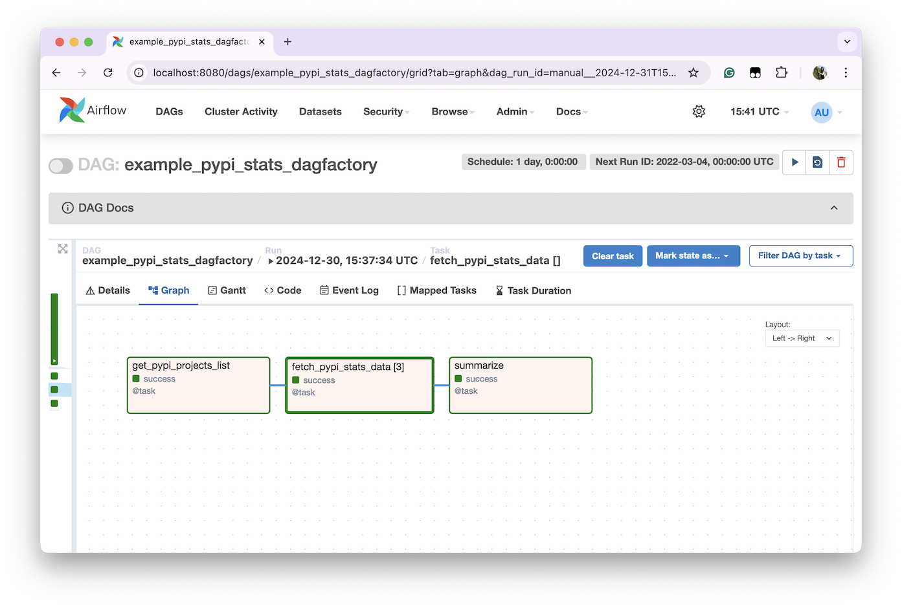

TaskFlow API: Using YAML instead of Python
For users that employ lots of Python functions in their DAGs, TaskFlow API represent a simpler way to transform functions into tasks, with a more intuitive way of passing data between them. They were introduced in Airflow 2 as an alternative to Airflow traditional operators.
The following section shows how to represent an Airflow DAG using TaskFlow API and how to define the same DAG using DAG Factory. Ultimately, both implementations use the same Airflow operators. The main difference is the language used to declare the workflow: one uses Python and the other uses YAML.
Goal
Let's say we'd like to create a workflow that performs the following:
- Create a list of PyPI projects to be analysed.
- Fetch the statistics for each of these projects.
- Summarize the selected statistics as Markdown, using Python.
We will implement all these steps using the Airflow task decorator, and the last task will generate a Markdown table similar to:
| package_name | last_day | last_month | last_week |
|:------------------|-----------:|-------------:|------------:|
| apache-airflow | 852242 | 28194255 | 6253861 |
| astronomer-cosmos | 442531 | 13354870 | 3127750 |
| dag-factory | 10078 | 354085 | 77752 |
The main logic is implemented as plain Python functions in pypi_stats.py:
def get_pypi_projects_list(**kwargs: dict[str, Any]) -> list[str]:
"""
Return a list of PyPI project names to be analysed.
"""
projects_from_ui = kwargs.get("dag_run").conf.get("pypi_projects") if kwargs.get("dag_run") else None
if projects_from_ui is None:
pypi_projects = DEFAULT_PYPI_PROJECTS
else:
pypi_projects = projects_from_ui
return pypi_projects
def fetch_pypi_stats_data(package_name: str) -> dict[str, Any]:
"""
Given a PyPI project name, return the PyPI stats data associated to it.
"""
url = f"https://pypistats.org/api/packages/{package_name}/recent"
response = httpx.get(url)
try:
response.raise_for_status()
package_json = response.json()
package_data = package_json["data"]
package_data["package_name"] = package_name
return package_data
except httpx.HTTPStatusError as e:
logger.error(f"HTTP Error while fetching {package_name}: {e.response.status_code}")
logger.error(f"Response content: {e.response.text}")
except ValueError as e:
logger.error(f"JSON Decode Error for {package_name}: {e}")
logger.error(f"Response content: {response.text}")
except KeyError as e:
logger.error(f"Unexpected response format for {package_name}: {e}")
logger.error(f"Response content: {response.text}")
return {
"package_name": package_name,
"last_day": 0,
"last_week": 0,
"last_month": 0,
}
def summarize(data: list[dict[str, Any]]) -> str:
"""
Given a list with PyPI stats data, create a table summarizing it, sorting by the last day total downloads.
"""
df = pd.DataFrame(data)
first_column = "package_name"
sorted_columns = [first_column] + [col for col in df.columns if col != first_column]
df = df[sorted_columns].sort_values(by="last_day", ascending=False)
markdown_output = df.to_markdown(index=False)
logger.info(markdown_output)
return markdown_output
Implementation
As a reference, the following workflows run using Airflow 2.10.2 and DAG Factory 0.21.0.
Plain Airflow Python DAG
from __future__ import annotations
from datetime import datetime
from typing import Any
try:
from airflow.sdk.definitions.dag import DAG
from airflow.sdk.definitions.decorators import task
except ImportError:
from airflow.decorators import task
from airflow.models.dag import DAG
from pypi_stats import fetch_pypi_stats_data, get_pypi_projects_list, summarize
with DAG(dag_id="example_pypi_stats_plain_airflow", schedule=None, start_date=datetime(2022, 3, 4)) as dag:
@task
def get_pypi_projects_list_():
return get_pypi_projects_list()
@task
def fetch_pypi_stats_data_(project_name: str):
return fetch_pypi_stats_data(project_name)
@task
def summarize_(values: list[dict[str, Any]]):
return summarize(values)
pypi_stats_data = fetch_pypi_stats_data_.expand(project_name=get_pypi_projects_list_())
summarize_(pypi_stats_data)
Alternative DAG Factory YAML
example_pypi_stats_dagfactory:
default_args:
start_date: 2022-03-04
tasks:
- task_id: "get_pypi_projects_list"
decorator: airflow.decorators.task
python_callable: pypi_stats.get_pypi_projects_list
- task_id: "fetch_pypi_stats_data"
decorator: airflow.decorators.task
python_callable: pypi_stats.fetch_pypi_stats_data
expand:
package_name: +get_pypi_projects_list
- task_id: "summarize"
decorator: airflow.decorators.task
python_callable: pypi_stats.summarize
values: +fetch_pypi_stats_data
Comparison
Goal
Both implementations accomplish the same goal and result in the expected Markdown table.
Airflow Graph view
As shown in the screenshots below, both the DAG created using Python with standard Airflow and the DAG created using YAML and DAG Factory look identical, from a graph topology perspective, and also from the underlining operators being used.
Graph view: Plain Airflow Python DAG

Graph view: Alternative DAG Factory YAML

Airflow Dynamic Task Mapping
In both workflows, we are dynamically generating a task for each PyPI repo.
Mapped Tasks: Plain Airflow Python DAG

Mapped Tasks: Alternative DAG Factory YAML
Airflow Code view
From an Airflow UI perspective, the content displayed in the "Code" view is the main difference between the two implementations. While Airflow renders the original Python DAG, as expected, in the case of the YAML DAGs, Airflow displays the Python file that references the DAG Factory YAML files:
import os
from pathlib import Path
from dagfactory import load_yaml_dags
DEFAULT_CONFIG_ROOT_DIR = "/usr/local/airflow/dags/"
CONFIG_ROOT_DIR = Path(os.getenv("CONFIG_ROOT_DIR", DEFAULT_CONFIG_ROOT_DIR))
config_dir = str(CONFIG_ROOT_DIR / "comparison")
load_yaml_dags(
globals_dict=globals(),
dags_folder=config_dir,
)
Code view: Plain Airflow Python DAG

Code view: Alternative DAG Factory YAML
To overcome this limitation, DAG Factory appends the YAML content to the DAG Documentation so users can better troubleshoot the DAG: